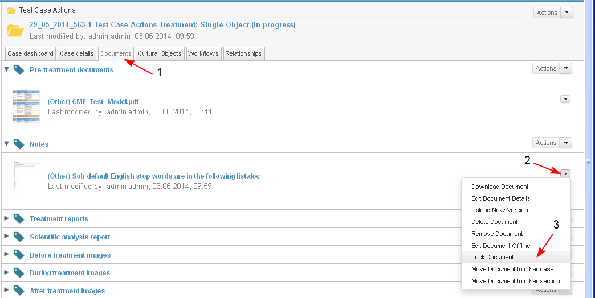

Restrictions
Only the user who has attached the document or an user with administrative permissions may lock a document.
- The user starts the action from:
- Personal Dashboard/ My Documents dashlet/ Actions/ Lock Document for a selected document
- Case Dashboard/ Documents dashlet/ Actions/ Lock Document for a selected document
- Case Dashboard/ tab Documents/ Actions/ Lock Document for a selected document (1-2-3)
- Document preview/ Actions/ Lock Document

- When the document is locked the following actions are performed automatically:
- The message "This document is locked by <user name>" is displayed (1) and the document cannot be edited by the users of the system - there is no possibility to edit the document properties or to update the version of the document.
- The button "Lock Document" becomes inactive (hidden) and the button "Unlock Document" becomes active (visible) (2).
- Other users may only review the document, download or unlock it .

- Locked document may be unlocked only by the user who has locked it or by an user with administrative permissions.